Module Version: 1.1.0.0
The Neteven connector is compatible with the following Magento versions:
The module is available on Magento Connect. The setup process is standard and like any other community module.
1 . Login to your Magento Connect Manager page with your backend credentials:
http://domain.com/downloader/
2 . Insert the Neteven module extension key in the matching field:
http://connect20.magentocommerce.com/community/neteven_netevensync

3 . Validate by clicking the Install then Proceed button
4 . The module will now be available in your installed modules list

5 . The setup is now complete. You can now return to your backend with the link Return to Admin
Once the module installed, check that the matching configuration item Neteven Synchronization is available in the Services part of the System > Configuration panel. You may have to logout and login again in case a 404 error appears when browsing to the Neteven Synchronization configuration panel.
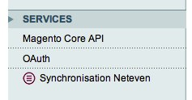
In order to use the automatic import/export processes shipped with the module, your system must already be configured to use the Magento scheduled tasks (cron). You can check the official documentation for further information on how to proceed to cron tasks setup.
Please check with your Neteven Account Manager that your WebService level access is enabled.
If your Magento server is blocking outgoing connections to external machines, you should now authorize http connections to the http://ws.neteven.com host.
In order to enable the orders synchronization, you have to check if your Magento instance is configured to handle tax calculations for orders shipped in all available countries selected in Neteven marketplaces.
You will have to setup the tax rate to suit the marketplaces enabled in your Neteven account.
Check the official documentation for more information on tax rates configuration.
The module configuration is available under the Neteven Synchronization item in the Services panel of the System > Configuration page.
All settings listed below have a Magento global scope impacting all websites, stores and storeviews configured on your Magento instance. This module only works between one Magento instance and one Neteven user account.
The configuration page follows Magento backend principles. You will have to save settings before launching any manual import/export or make a connection parameters test (see below).
The only required fields of the configuration are account credentials. In order to configure them, fill in the credentials you usually use to connect the Neteven backend in the Email and Password fields.

Once completed, save the configuration and click on Test connection setup.
Magento should now display a success alert showing that your credentials are correct.
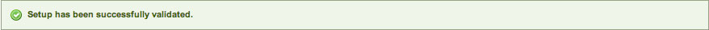
If an error occurs, the following message will be displayed:

Check that the credentials typed match your Neteven account or contact your Neteven Account Manager (contact information in the HelpDesk section below).
Please also make sure to save the configuration after changing your credentials information and prior to making any connection test with new credentials information.
When turning on the debugging mode, all contents from requests sent to and all responses received from the Neteven http://ws.neteven.com host are logged in a file named "neteven_debugging.log" saved in the /var/log folder of your Magento instance.
When using the Sandbox mode, no real order are synchronized between Magento and the Neteven platform. Only orders that are present in the "Sandbox" marketplace in the Neteven platform are synchronized. Please contact you Neteven Account Manager (contact information in the HelpDesk section below) to make sure that the "Sandbox" marketplace has been properly setup.
The first configuration step of the module is about exporting your products catalog.

The fields are:
In order to provide more accurate data to the marketplace and link your products easily, Neteven allows you to provide additional fields like the ISBN number for books.
As these attributes are not created by default in a fresh Magento setup, you will need to create them by using the attributes sets system in order to use them. Once created, you will have to map them in the configuration panel.
To map them, please select the right attribute for the specific fields you need:

You will be able to select, for each specific Neteven attribute, its matching Magento attribute. Only those useful for your products catalog should be configured.
Some product attributes are required by Neteven so they are exported automatically by the module.
Those attributes (attributes codes) are:
nameshort_descriptiondescriptionmodelcostweightpriceweeeimagemedia_gallerytax_class_id attributeMagento store views are mapped with Neteven languages. Each Magento store view can be mapped to a Neteven language. If filled up, product data from each store view is exported to the corresponding language in Neteven.
In order to configure a Magento store view <--> Neteven language mapping, change configuration scope and choose a store view.
Configuration area below must be visible :
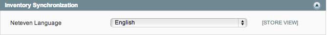
Choose a Neteven language to which the current store view must be mapped. Repeat for other store views to export.
Localized information in Neteven Console, example:
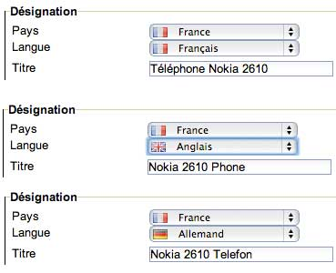
Please get in touch with your Account Manager Neteven in case of specific needs.
Once the inventory synchronization has been configured, the next step is to setup the stock synchronization. Just edit the following fields:
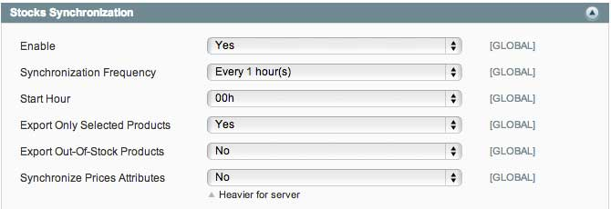
The data volume being lower than the inventory synchronization, you can select a higher synchronization frequency.
The configuration final step is to configure the orders synchronization. The Neteven module works both ways:
The setup is based on the following fields:
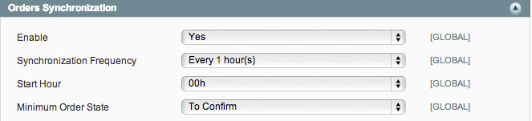
Magento order statuses being configurable, you will need to map your local Magento order statuses with the default Neteven ones. Without this step, the orders workflow can't be properly executed.
In order to do that mapping, slide down the Neteven -> Magento Orders Mapping block. For each Neteven status, select the matching Magento status. While configuring a default Magento instance, you should obtain these settings:

Once this step is completed, you will have to do the same for the reverse way. Slide down to the Magento -> Neteven Orders Mapping block. A full list of all available Magento order statuses will be displayed. Select the matching Neteven status for each line of the order workflow:

Save all settings by clicking on the Save button in the top right hand corner.
Magento store views are mapped with Neteven countries. Each Magento store view can be mapped to a Neteven country. Orders imported from Neteven to Magento are thus attached to their respective store views depending on their country.
To configure a Magento store view <--> Neteven country mapping, please change current configuration scope and choose a store view.
Configuration area below must be visible :
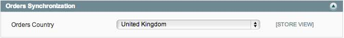
Choose which country to map to the current store view. Repeat for other store views.
Sample orders imported from Neteven and attached to different store views:
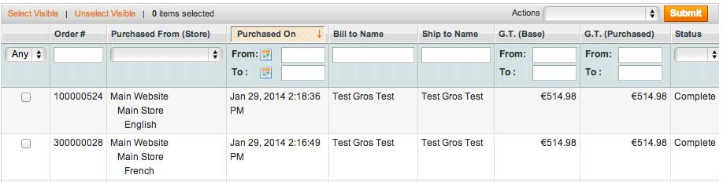
Please get in touch with your Account Manager Neteven in case of specific needs.
Even if the Neteven module includes the update of shipping costs from Neteven data, you will need to select the shipping method used for the marketplaces related shipments. Select in the list of all available shipping methods the one you want to be used for all Neteven orders:
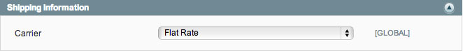
Please note - multi-views configuration : Changing configuration scope gives the ability to choose a different carrier for each store view. It is then required to configure Magento store view <--> Neteven country mappings (see Multi-store / multi-languages management).
Once the configuration has been done and saved, all files exchanges will be automatically managed by the scheduling system at defined hours.
If however want to force a synchronisation, you can, for every data type, click on the Synchronize now button.
For the inventory synchronization, you can force an incremental or a full synchronization. Please be aware that the volume needed to export all products can impact your site performance. The panel on the left displays the number of products being queued (added, edited or deleted) for the next synchronization:
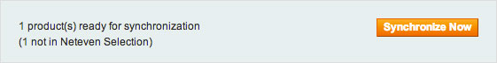
The orders synchronization block lets you search and synchronize all orders from a specified datetime. In the following example, all orders updated on Neteven and Magento after January 1st, 2013 will be imported and exported.
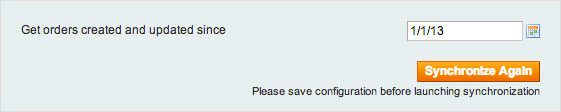
In case of a status mismatch for an order (eg. an order has a Neteven status below the Magento one), it will be ignored.
In order to bypass the PHP and Magento execution time and memory limits, the synchronization system uses the Magento Ajax dataflow system. When manually launching a synchronization, a new window will be opened:

This window must stay opened until the process is completed for the synchronization to properly work. Once finished, you can close the process window.
Even MarketPlaces, Neteven's inventory and orders management is available in the Magento admin. It is available by going to: Catalog > Neteven > Neteven Console.
You must then provide your Neteven credentials:

Once logged in, you can access all Neteven features right thru the Magento admin:
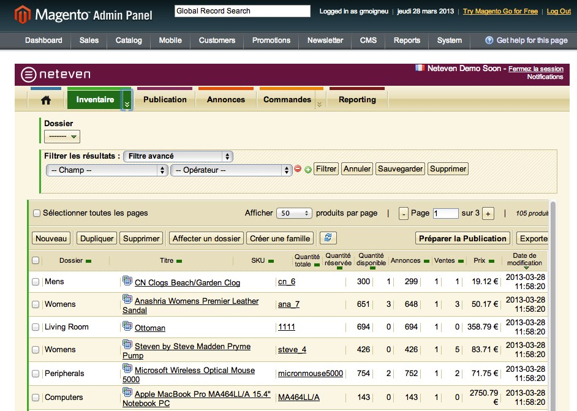
The module default behavior is to export the complete products catalog to the Neteven system. If you want to only synchronize some of them, you will have to enable and configure the Neteven selection.
You can now go to the menu item Catalog > Neteven > Neteven Selection.
This configuration screen is divided in two parts:
To add some products to the selection, just click on Available products and select the ones to be exported by checking their row.

You can filter the results list and cycle through them by using the pagination system like in any other Magento data grid.
Once the products you want to add are checked, validate by clicking on Add selected products to the selection. Once the page has been reloaded, you will be on the exported products list.
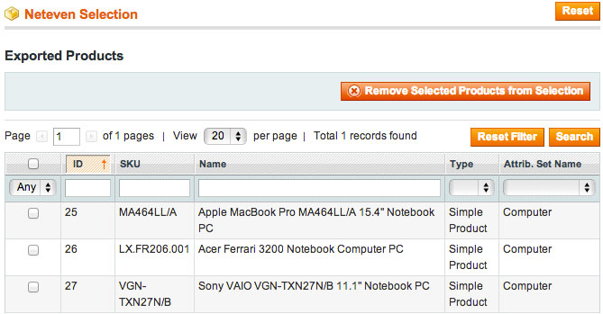
Once again, you can use the filter and pagination systems to navigate through this list.
To remove a product from the selection, simply tick its corresponding checkbox in the exported products listing and click on the Remove selected products from the selection button. The page will be reloaded with an updated list.
Also, by clicking the Reset button, the whole "Neteven Selection" page will be reloaded and any checked item in "Exported Products" and "Available Products" will be unchecked.
When an unexpected behaviour comes up while synchronizing, the Magento administrator is automatically alerted by the display of a Magento error notice specifying which synchronizations experienced errors:

More details on the error will be available in the neteven module log:
user@server:~# tail -f {Magento path}/var/log/neteven.log
You will be able to detect which entity is causing the error and an error message on the reason why it failed:
2013-03-28T10:49:52+00:00 DEBUG (7): Imported order item does not exist in catalog. Item ID: 6734200, Order ID: 3788519, Sku: TEST_1
When an entity id is blocking the synchronization, it will be automatically ignored unless the administrator modifies it.
Neteven - www.neteven.com
Phone: +33 (0) 1 83 64 59 50
http://www.neteven.co.uk/neteven-contact-us.html
Development: Agence SOON
http://www.agence-soon.fr